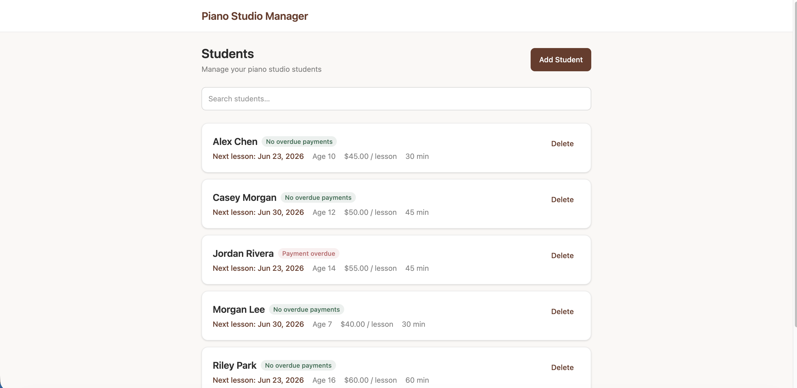

Solo project
Piano Studio Dashboard
Dashboard for my private piano studio
Full-stack web application built with React/Vite, Tailwind CSS, and a python FastAPI backend. Data is stored on a local SQLite database.
Features include:
- Piano lesson planning
- Payment dashboard / tracking
- Viewable lesson history
Site is currenly hosted on my own personal server and exposed to the intenet via Cloudflare tunnel.